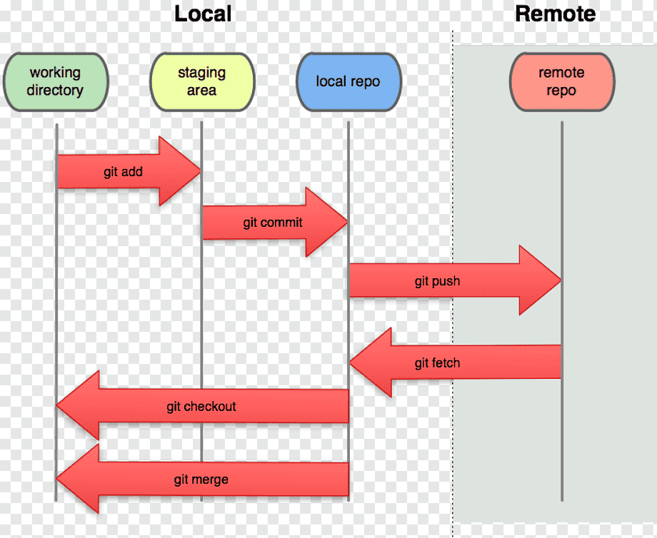

Que es GitHub
GitHub es una plataforma basada en la nube para alojar, compartir y colaborar en proyectos de software utilizando Git. Los usuarios pueden crear repositorios para almacenar el código fuente de sus proyectos y hacer un seguimiento de los cambios realizados en el código a lo largo del tiempo. La plataforma ofrece herramientas para la colaboración y gestión de proyectos, como seguimiento de problemas y solicitudes de extracción, revisiones de código y wikis. Es ampliamente utilizada en la industria del software y es un lugar común para compartir y colaborar en proyectos de código abierto. La plataforma también es una comunidad en línea de desarrolladores de software.
